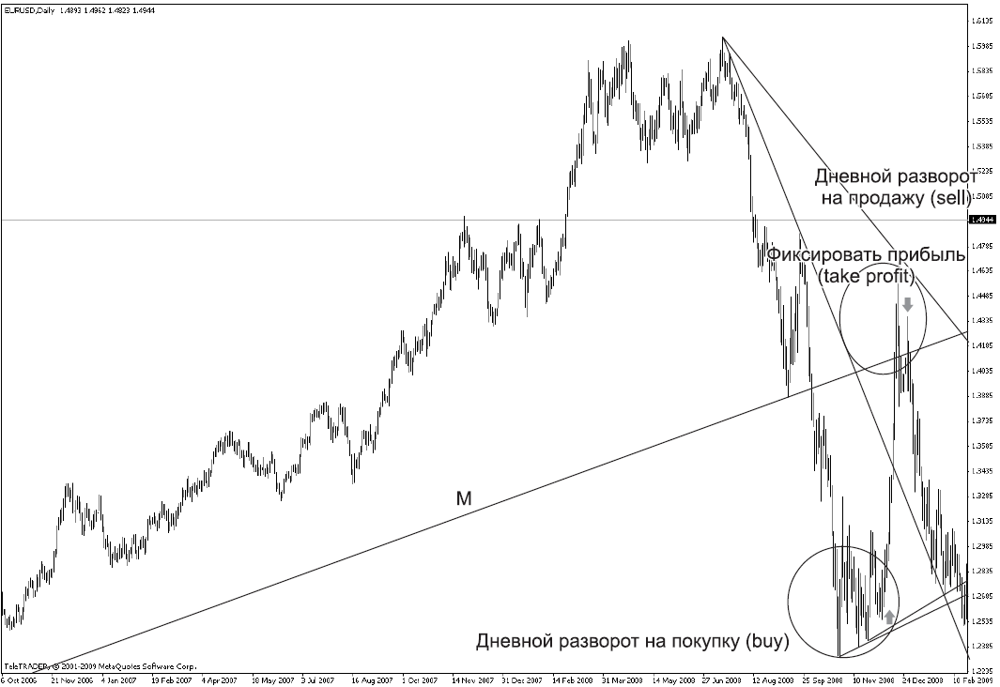
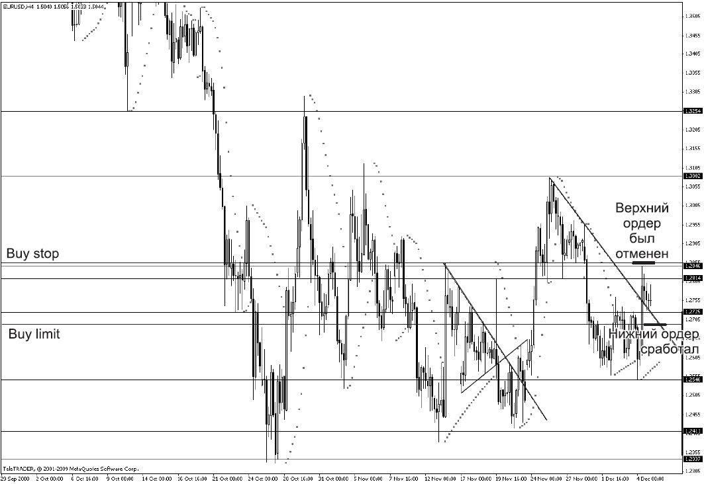

Открытая форточка для трейдера

Старая муха самоотверженно билась башкой о стекло. Наверное, часа полтора. Отлетала назад, разворачивалась и, свирепо жужжа, бесстрашно шла на таран. Молодая муха подбежала и робко спросила: «Простите, если не секрет, зачем биться головой о стекло, когда рядом открыто?!» Старая муха ответила, еле двигая челюстями: «Глупая ты! Оттого что молодая! В открытое окно любой дурак вылететь может! Ну а радости-то? Влетел, вылетел, влетел, вылетел! Разве живем ради этого?! А вот ты поработай своей головой, пока не распухнет, пока пол с потолком не сольется! И когда жужжать уже нечем, – вот тут и ползешь туда, где открыто! Если б ты знала, как мне сейчас хорошо!» Молодая муха старалась не смотреть на распухшую голову старой, а та продолжала: «Мой папа всю жизнь бился головой о стекло. Мама покойная билась. И мне завещали: только преодолевая трудности, почувствуешь себя человеком!»
Подчас трейдер напоминает ту самую старую муху умудренную жизненным опытом, которая бьется в закрытое окно, хотя рядом открыта форточка. То есть он настолько усложняет анализ текущей ситуации, что забывает о самых простейших сигналах, которые нам подает рынок.
Прежде всего определим основные принципыработы:
• сохранение депозита;
• приумножение депозита.
Это не мое ноу-хау. Еще Уоррен Баффет (а именно этот человек возглавил список богатейших людей мира по версии журнала Forbes в 2008 году – у него есть чему поучиться) определил свои правила следующим образом:
Правило номер один – не потеряй деньги.
Правило номер два – не забудь правило номер один.
Необходимо отметить, что, только научившись сохранять свой депозит, вы начнете его приумножать. Именно принцип 1 – сохранение депозита – диктует нам необходимые правила входа в рынок.
Итак, с чего начинать?
Конечно же, с выбора валютной пары, с которой вы планируете работать. Принцип подбора очень прост. Он состоит в том, чтобы выбрать наиболее безопасную и дешевую с точки зрения депозита валюту.
Прежде всего обращаем внимание на следующие характеристики:
• залоговая сумма;
• спред;
• стоимость пункта;
• волатильность;
• техничность.
Залоговая суммаДепозиты у всех разные, и что толку засматриваться на ту же пару GBR/CHF, если у вас депозит, скажем, 3000 долларов, а у этой валютной пары залоговая сумма – 3000 долларов. Определить залоговую сумму можно и самому, открыв сделку на демосчете и посмотрев в графе «Залоговая сумма» или «Условия торговли» на сайте компании, где вы открыли свой счет.
СпредЗа вход в сделку мы платим спред (разница между покупкой и продажей). Спред можно узнать в графе «Обзор рынка», а можно заглянуть в раздел «Условия торговли» программы «MetaTrader». На той же паре GBP/CHF спред равен 10 пунктам.
Стоимость пунктаНа валютной паре GBP/CHF 1 пункт стоит 12 долларов.
Теперь давайте подсчитаем.
За вход в сделку по валютной паре GBP/CHF с вас взимается 10 пунктов х 12 долларов = 120 долларов, при залоговой сумме 3000. Значит, с баланса при входе в сделку вычитается 3120 долларов. А у вас какой депозит? В 3 раза больше? Тогда все в порядке. Если же меньше, задумайтесь: оно вам надо? Риски-то высоки. Как говорит знакомый трейдер: «Я не жадный, но домовитый».
ВолатильностьДля того чтобы оценить, по карману ли вам приглянувшаяся валютная пара, присмотритесь, какой у нее характер движения. Выбирайте пару, опираясь на свой психотип. Так и хочется сказать – выбирайте так же, как жену (мужа) выбирали, – как в жизни. Помните слова Жени Лукашина из фильма «Ирония судьбы, или С легким паром» о предстоящей женитьбе: «Я как представил, как она у меня будет мелькать перед глазами: туда-сюда, туда-сюда – и так всю жизнь! Бр-р-р!»? Конечно, валютную пару можно сменить, но не хочется терять время. Поэтому для начала определите свои приоритеты.
У кого-то девиз жизни: «Вижу цель. Верю в себя. Не замечаю препятствий!» То есть если вы человек динамичный, привыкший быстро принимать решения – добро пожаловать на пару фунт-йена. С ней вы слетаете на 300 пунктов в этом часе, а уже в следующем на 200 пунктов в другую сторону! И вас это вдохновляет, вы радуетесь жизни – адреналин, одним словом. А кто-то рассуждает по-другому: «Тише едешь – дальше будешь!», «Семь раз отмерь – один отрежь!», то есть ваш характер требует спокойного, взвешенного подхода. Не вопрос, есть пары и для вас, и доллар-франк – одна из них. Эта пара даст время подумать и принять решение о входе в сделку.
Например, если рассматривать такие сопряженные валютные пары, как USD/JPY, EUR/JPI и GBP/JPI, то обращает на себя внимание тот факт, что при движении цены за один и тот же период времени USD/ JPI может пройти 50 пунктов, EUR/JPI – 75 пунктов, a GBP/JPI – все 150-200 пунктов. Это и называется волатильностью [3]. С точки зрения жадности, конечно, хочется выбрать GBP/JPI (еще бы, такой размах!), но помня о том, что безопасность превыше всего, целесообразно выбрать USD/JPI. «Лучше меньше, да лучше» – это не я, а классик мирового коммунизма изрек. И попал в точку. Вообще у каждой валюты свой ритм движения, как и у городов. Во какое сравнение забабахала!!! Первый раз я ощутила, что у каждого города свой ритм, когда попала в Ниццу. Ритм жизни действительно меня удивил. Я вам его опишу немного, может, странным образом... Но именно такие ассоциации он у меня вызвал.
Бежит бодрая поджарая собака, за ней, держась за вытянувшийся как струна поводок, запыхавшаяся, задыхающаяся бабуля. Собака заливисто лает, бабуля беззлобно на нее ругается. При этом обе счастливы. Это сценка из нашей московской жизни. Ритм города накладывает отпечаток на всех, кто в нем живет, в том числе на животных.
По городу идет древний дедушка, еле передвигая ноги. За ним на провисающем (!!!) поводке неспешно бредет ленивая откормленная псина, спокойным взглядом оглядывая округу... Вот дедушка приостановился, и пес вальяжно уселся на мостовую. Дедушка перекинулся парой фраз с псом – тот ему ответил лениво, махнув хвостом. И они продолжают свой путь. При этом оба счастливы. Это Ницца. Это ее ритм.
Какой ритм для вас более комфортен – знаете только вы. Вам и выбирать: спокойствие или адреналин привлекательнее при работе на рынке лично для вас.
ТехничностьЭтот термин означает, насколько та или иная валюта (судя по ее истории) прогнозируема с точки зрения ее движения.
История всегда повторяется. Это аксиома. Конечно, с поправкой на время. Важно изучить по истории, на какие именно закономерности реагирует выбранная вами валютная пара. Подробно эти закономерности мы разбирали в главе 4. Ведь каждый из нас по-своему реагирует на одну и ту же ситуацию, хотя редко кто преступает жизненные законы. И именно человеческий фактор играет важную роль в движении цены, то есть на движение валют распространяются все те комплексы и привычки, которые присущи человеку.
Итак, валюта выбрана.
Следующий шаг – графический анализ.Принцип его проведения следующий:
1. Всегда анализируем от большего периода к меньшему (то есть М ? W ? D ? 4Н).
2. Помним, как в картах, где туз старше короля, а король старше дамы, что уровни и трендовые линии, проведенные на месячном графике (Monthly, М),более значимы, они «важнее» линий, проведенных на недельном графике (Weekly, W),а недельные «важнее», чем дневные (Dayly, D).Это означает, что если, допустим, дневной тренд восходящий и при этом цена упирается, скажем, в недельный уровень, то, скорее всего, от этого уровня последует отскок. Еще пример. Пусть недельный тренд направлен вверх, а дневной – вниз. В этом случае дневной тренд (он выступает в качестве коррекционного) при подходе к недельному тренду, скорее всего, совершит отскок (это мы выяснили в главе 4).
Итак, на месячном графике определяем:
• уровни поддержки и сопротивления.
• направление тренда.
• разворотные моменты.
Те же параметры мы определяем на недельном и на дневном графиках.
Уровни поддержки и сопротивлениямы определяем для того, чтобы выяснить диапазон, в котором торгуется валютная пара. Это дает нам возможность «торговли в канале», которую мы с вами разбирали в главе 3. При этом очень важно, что после пробития уровня поддержки или сопротивления мы имеем возможность выставить сделку от пробитого уровня в противоположном направлении – эти сделки мы с вами разбирали в главе 4. Следует отметить, что чем «старше» уровень, который преодолевает цена (то есть таймфрейм, где этот уровень определяется), тем более значительное движение ожидает валютную пару.
Направление трендамы определяем исходя из признаков направленности движения. Вспомните признаки восходящего и нисходящего движения.
Что же такое разворотные моменты?
Цена, пробивая линию поддержки, в большинстве случаев возвращается к ней уже как к линии сопротивления. Кто-то называет этот момент «обратной петлей», кто-то – «подходом с обратной стороны», кто-то – «зигзагом удачи», а кто-то – корректным пробитием линии поддержки. Неважно, как его называют, важно то, что именно этот момент является разворотным в тренде и дает нам сигнал на вход в сделку от контртренда.
Не стоит начинать каждый день с месячного графика – его достаточно просматривать один раз в месяц (ведь мы с вами не являемся владельцами банков, чтобы выставлять свои ордера, ориентируясь на далекую перспективу). Аналогично, недельный график мы просматриваем один раз в неделю, а дневной – ежедневно.
Итак, принимаем дневной тренд за основной. Именно по направлению движения дневного тренда определяем характер сделки.
Если дневной тренд – восходящий, то сегодня мы покупаем, но покупаем не от любой цены, которую видим на данный момент, а на временном падении цены, которое ищем на 4-часовом периоде. То есть если дневной тренд направлен вверх, то ищем коррекцию на 4-часовом периоде (когда он направлен вниз) и при его развороте встаем в сторону дневного направления на покупку. Предлагаю вашему вниманию реальную сделку от 5.12.2008 (рис. 6.1).
1. Получен дневной сигнал о развороте цены.
2. Переходим на 4-часовой период и ждем разворота на покупку уже на этом периоде. Этот разворот на 4-часовом графике показан на рис. 6.2.
3. Когда цена пробивает линию сопротивления и закрывает выше этой линии сопротивления несколько 4-часовых свечей, это говорит о серьезности ее намерения идти вверх. Мы радостно потираем руки, предвкушая замечательное движение, и выставляем ордер на покупку, а на случай, если цена не упадет именно до нашего ордера, ставим еще один ордер на пробитие вверх. Стоп-ордер мы выставляем за последним пиком, поскольку тренд восходящий и всякий последующий пик и последующий спад выше, чем предыдущий. И мы справедливо полагаем, что ниже него цена не упадет.
И наконец, где же нам фиксировать прибыль? Обратите внимание, как на рис. 6.1 цена «разрисовывает» разворот на продажу. Именно этот разворот на продажу является сигналом фиксировать прибыль – 1650 пунктов. И – поехали с рынком вниз до следующего разворотного момента вверх. Запомните важную особенность любой тенденции (тренда): тренд никогда не разворачивается и не идет в противоположную сторону сразу. Прежде чем тренд вверх сменится трендом вниз, пройдет время. В этот промежуток времени цена стоит фактически на месте, делая «выбросы» в сторону, противоположную тренду. Это может ввести в заблуждение. Если при наличии продолжительного роста или падения цена в первый раз пересекает вашу трендовую линию, то всегда помните что далее, вероятнее всего, последует краткосрочный откат цены, который сменится продолжением тренда. Если цена начинает пересекать линию поддержки или сопротивления, значит, происходит изменение направления. Просто? Пускай просто, главное – что без головной боли снимаешь прибыль и нет необходимости постоянно сидеть перед монитором, реагируя на малейшие движения цены.

РИС. 6.1.Пример реальной сделки

РИС. 6.2.Разворот цены на 4-часовом графике
Давайте подведем итоги и выработаем необходимый алгоритм действий. Это будет нашим бизнес-планом.
1. Выбор валютной пары.
2. Выбор графика, который мы будем считать основным (определимся с интервалом – дни, недели, месяцы). Тренд на этом графике мы будем принимать за основную тенденцию. То есть смотрим, куда идет цена на этом графике: вверх или вниз (вспоминаем признаки восходящего и нисходящего трендов). Это и будет направление тренда.
3. Открытие более коротких графиков. Если основной график дневной, то открываем 4-часовой и часовой графики. Интерес эти графики представляют тогда, когда движение цены идет не в сторону дневного тренда, а в противоположную. Необходимо дождаться, когда кривая цены на 4-часовом графике начнет заворачивать в сторону дневного. То есть если дневной график показывает восходящее движение, а 4-часовой – нисходящее, мы готовимся к предстоящей сделке. То есть ждем разворота 4-часового графика в сторону основной дневной тенденции и встаем в его сторону.
4. Определяем и устанавливаем стоп-лосс (см. раздел 5).
5. Определяем и устанавливаем тейк-профит (ордер на фиксацию прибыли). Главным аргументом на закрытие позиций будет являться сигнал, противоположный тому, который послужил мотивацией к открытию валютной позиции.
6. Определяем соотношение стоп-лосса и тейк-профита. Это говорит о рентабельности сделки. Соотношение возможной прибыли и убытков должно быть не меньше чем 3:1.
Торговля должна приносить ощущение радости жизни! А если находиться перед компьютером постоянно, можно это ощущение потерять! Поэтому дневные сигналы – надежные помощники трейдеров.
Зачем биться о стекло изо дня в день, ведь форточка открыта, уважаемые трейдеры!
? ВСЕ ДЕЛО В МОНИТОРЕ
(из цикла «Невыдуманные истории»)
Сижу, возмущаюсь: «Да что же это такое! Точки на продажу вижу, а на покупку – зеваю...» Славик, опытный трейдер, выслушал меня с интересом и говорит: «Не понимаю, в чем проблема, Ирин, переверни монитор и покупай сколько хочешь...»
? ДОРОГО ЗАПЛАТИЛ...
(из цикла «Невыдуманные истории»)
Саша, один из самых уважаемых трейдеров в дилинге, вспоминает: «Представляешь, я семь раз открывал депозит». – «Как это?» – «Только сливал, не мог дождаться следующего дня, чтобы быстрее поехать в дилинг и открыть новый счет. И лишь потом понял, что нужно анализировать рынок».
? ВСЕ МОЖНО ОБЪЯСНИТЬ
(из цикла «Невыдуманные истории»)
Трейдер очень долго и исчерпывающе объясняет инвестору свои действия по поводу открытой в рынке позиции, опираясь на знания фундаментального анализа, рассматривает технический анализ, указывает разворотные фигуры... И заканчивает свою речь фразой: «...Как мы и предполагали, рынок пошел против нас...»
? ТРЕЙДЕРСКИЕ АНЕКДОТЫ
Трейдер выпал с десятого этажа, но в районе пятого сумел скорректироваться и снова ушел вверх.
Финансовый аналитик едет в лифте. На одном из этажей лифт останавливается. В него заходят трейдеры. Видят аналитика. Радуются: «Ну, теперь-то ты точно скажешь, вверх или вниз».
? ЖАДНОСТЬ ФРАЕРА СГУБИЛА
(из цикла «Невыдуманные истории»)
27 декабря 2006 года. Мы уезжаем на две недели в Норвегию. Я – в предвкушении поездки. Настроение замечательное. Перед отъездом смотрю рынок. Евро-доллар. Замечательная точка на покупку – от уровня поддержки, по тренду. С минимальным стоп-лоссом. В общем, все, как я люблю. Надо мной стоят мои домочадцы и нервно посматривают на часы. «Сейчас, сейчас», – говорю я и выставляю сделку. Покупаю с текущей цены, выставляю стопарь. «Тейк-профит?» – спрашиваю я себя. «Да ладно, – нашептывает мой внутренний голос, – зачем ограничивать свою прибыль». И я не ограничиваю. В тот момент мне уже виделось, как, приехав, я восхищаюсь собственной дальновидностью и снимаю профит, окупающий мою поездку в несколько раз. Тогда я еще не брала с собой ноутбук и поэтому сделки не отслеживала. Поездка действительно была замечательная. Мы отправились на своей машине, поэтому могли останавливаться там, где хотелось нам и задерживаться на то время, которое нас устраивало. Норвегия поразила своей ухоженностью, спокойствием, чистотой, отношением к людям, умением красиво отмечать праздники. Дома украшены так, что кажутся игрушечными. Несмотря на то что электричество очень дорого, везде горят гирлянды. И если даже хозяева отсутствуют, все равно в окнах горит свет. Так принято, поскольку полярная ночь, и дома не должны глядеть темными окнами на проходящих мимо прохожих. Мы жили у нашей подруги в городке с населением 10 тысяч человек. При этом инфраструктура в поселке впечатляет. Три обычные гостиницы плюс одна ледяная. Можно было остановиться и в ней. Два бассейна. Краеведческий музей. Три супермаркета. Куча маленьких лавочек. Дом для престарелых, в котором живут, как в санатории, бабушки и дедушки. Когда я увидела, как две подружки преклонного возраста, но в модном «прикиде», выезжают на прогулку на этаких салазках (я такие салазки видела на картинках), весело щебеча и посмеиваясь, у меня в голове крутилась лишь одна фраза: «Так жить нельзя». В любую свободную минуту все встают на лыжи, и вперед. Причем трассы построены специально для горожан. Интересно было наблюдать прогулки с собаками. Есть специальное место для выгула животных. Так вот, очень часто я видела такую картину: выходит хозяйка (или хозяин), открывает багажник, в него запрыгивает пес, и его вывозят на прогулку. Вы представляете, как объяснить четвероногому другу, что необходимо потерпеть?
А фейерверки – это вообще фантастика. Я от избытка эмоций практически сорвала голос!
И кто нам рассказывал, что у иностранцев не принято ходить в гости друг другу без приглашения? Ходят, и с удовольствием.
Но это все лирика. Отдыхая, я все равно помнила о том, что у меня открыта сделка. И вот четвертого января – помню, как будто это было вчера, – мне снится сон, что пара евро-доллар разрисовала разворот вниз. А я сидела в далекой Норвегии и не знала, что делать. И это в век компьютеризации. И в развитой стране. Сейчас я знаю, что делать. Надо просто зайти на сайт дилинга (www. teletrade.ru), скачать программу MetaTrader, зайти на свой счет и проконтролировать сделку. Но тогда я «заблондинила», подсказать мне было некому, и я положилась на авось. По приезде в Москву первое, что я сделала, это включила комп. Интуиция не обманула: действительно, четвертого числа пара евро-доллар, давая мне прибыль в 200 пунктов, развернулась вниз. А седьмого января сработал стоп-лосс. Расчет сделки был верный. А результат... Зная, что вы не сможете проконтролировать выставленную позицию, всегда выставляйте стоп-лосс и тейк-профит. А лучше просто не входить в сделку, если у вас не будет возможности ее отслеживать. Лучше не заработать, чем потерять.
? НОРМАЛЬНЫЕ ГЕРОИ ВСЕГДА ИДУТ В ОБХОД
(из цикла «Невыдуманные истории»)
Дима (размышления вслух): «Ирин, скажи, почему так происходит? Вот идет тренд. Чего, кажется, проще – вставай по тренду и зарабатывай. А меня постоянно распирает встать против тренда. Если тренд восходящий, я ищу, где можно продать. А если тренд нисходящий, я выискиваю, где можно купить». – «Дим, значит, ты агрессивный трейдер. Который всегда в оппозиции к рынку. Есть такая категория игроков. Всегда ищут, откуда начнется разворот рынка». Дима, мрачно: «Да не ищу я разворот рынка, я так встаю, на "пипсятинку". Пунктов на пятьдесят. А по тренду мог бы заработать во много раз больше и без головной боли». – «Хорошо уже то, что ты это понимаешь. Дело за малым – побороть в себе эту пагубную привычку – довольствоваться малым».
Можно сколько угодно смеяться: дескать, мы не ищем легких путей, пускай меня сначала «поколбасит», а потом, даст «по нулям выйти». Но мы все хотим зарабатывать. И значит, надо искоренять то, что нам мешает. А против лома нет приема. То есть против тренда становиться – себе дороже.
? ФУНТ «ЛОМАНУЛСЯ»
(из цикла «Невыдуманные истории»)
Сидим, что-то увлеченно обсуждаем с трейдерами. Вдруг нас прерывает возглас Вадика: «Ого! Фунт ломанулся!» Все кинулись к мониторам. Фунт стоит. «Вадик, куда же это он ломанулся?» Вадик смотрит с удивлением на свой монитор. Потом объясняет: «У меня минутки стоят. Я увидел, как он дернулся, и сам перепугался...»
Чем меньший таймфрейм стоит у вас на мониторе, тем больше вы подвержены стрессовым ситуациям, потому что вы реагируете на ценовые шумы и подпадаете под «гипноз» рынка. Анализируйте всегда на большем временном интервале – не ошибетесь.